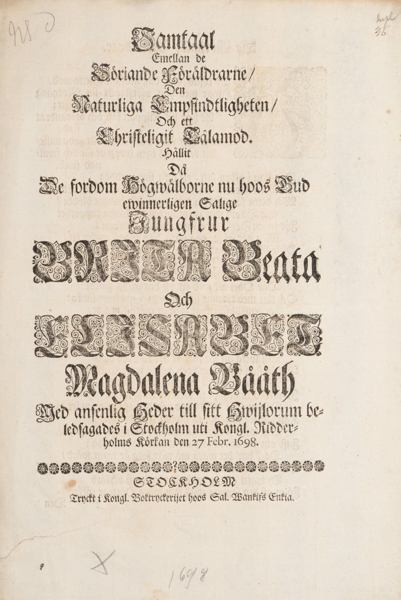
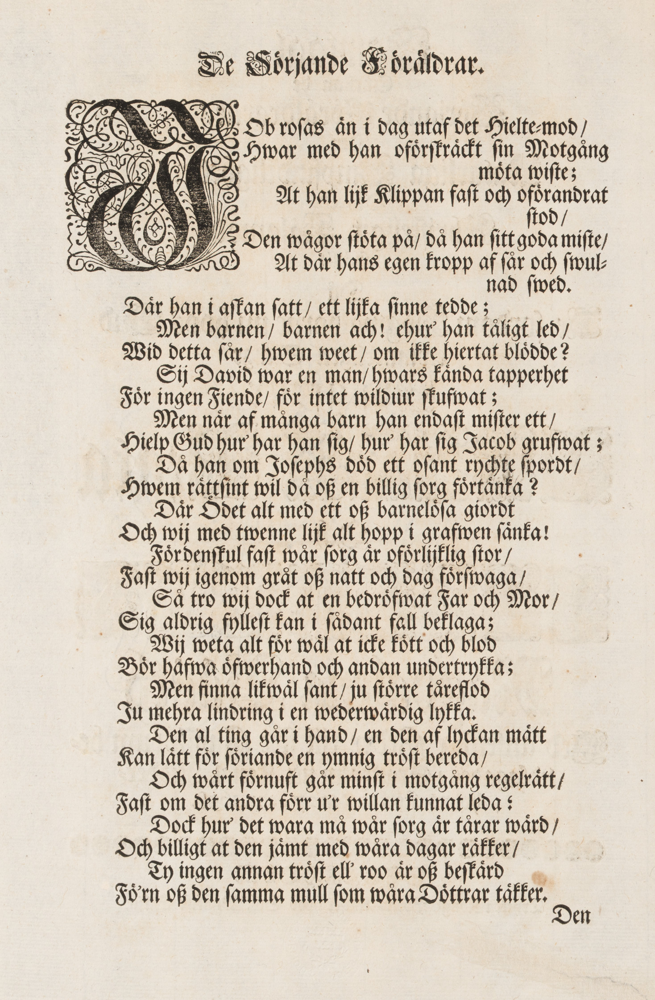
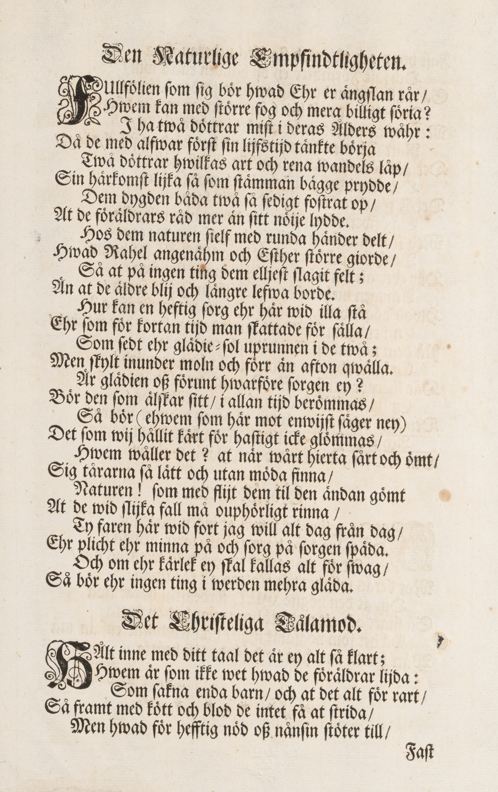
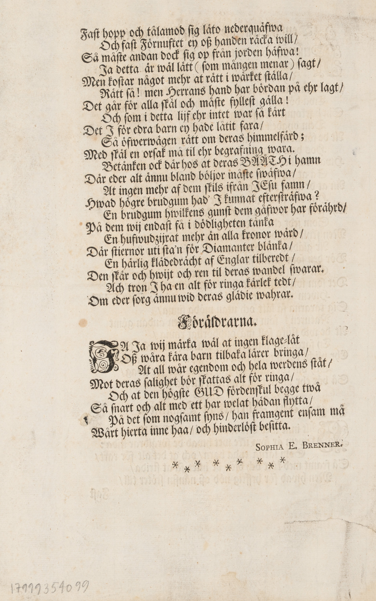

| Faksimil | Text |
|---|---|
 |
36
Samtaal
|
 |
De Sörjande Föräldrar.
JOb roſas än i dag utaf det Hielte-mod /
Hwar med han oförskräckt sin Motgång
möta wiſte; At han lijk Klippan ſatſ och oförandrat
ſtod / Den wågor ſtöta på / då han ſitt goda miſte /
At där hans egen kropp af ſår och ſwull-
nad ſwed. Där han i aſkan ſatt / ett lijka ſinne tedde;
Men barnen / barnen ach! ehur' han tåligt led /
Wid detta får / hwem weet / om ikke hjertat blödde?
Sij David war en man / hwars kända tapperhet
För ingen Fiende / för intet wildiur ſkufwat;
Men när af många barn han endast miſter ett /
Hielp Gud hur' har han sig / hur' har ſig Jacob grufwat;
Då han om Josephs död ett oſant rychte ſpordt /
Hwem rättſint wil då oß en billig ſorg förtänka?
Där Ödet alt med ett oß barnelöſa gjordt
Och wij med twenne lijk alt hopp i grafwen ſänka!
Fördenſkul fast wår ſorg är oförjlijklig ſtor /
Faſt wij igenom gråt oss natt och dag förſwaga /
Så tro wij dock at en bedröfwat Far och Mor /
Sig aldrig fylleſt kan i ſådant fall beklaga;
Wij weta alt för wäl at icke kött och blod
Bör hafwa öfwerhand och andan undertrykka;
Men finna likwäl ſant / ju ſtörre tåreflod
Ju mehra lindring i en wederwärdig lykka.
Den al ting går i hand / en den af lyckan mätt
Kan lätt för ſörjande en ymnig tröſt bereda /
Och wårt förnuft går minſt i motgång regelrätt /
Faſt om det andra förr u'r willan kunnat leda:
Dock hur det vara må wår ſorg är tårar wärd /
Och billigt at den jämt med wåra dagar räkker /
Ty ingen annan tröſt ell' roo är oß beſkärd
Fö'rn oß den ſamma mull ſom wåra Döttrar täkker.
Den |
 | Den Naturlige Empfindtligheten.
FUllföljien som ſig bör hwad Ehr er ängſlan rår /
Hwem kan med ſtörre fog och mera billigt ſöria?
I ha twå döttrar miſt i deras Ålders wåhr:
Då de med alfwar förſt ſin lijfstijd tänkte börja
Twå döttrar hwilkas art och rena wandels låp /
Sin härkomſt lijka ſå ſom ſtämman bägge prydde /
Dem dygden båda twå ſå ſedigt foſtrats op /
At de föräldrars råd mer än ſitt nöije lydde.
Hos dem naturen ſielf med runda händer delt /
Hwad Rahel angenehm och Esther ſtörre gjorde /
Så at på ingen ting dem eljeſt ſlagit felt;
Än at de äldre blij och längre lefwa borde.
Hur kan en heftig ſorg ehr här wid illa ſtå
Ehr ſom för kortan tijd man ſkattade för ſälla /
Som ſedt ehr glädie-ſol uprunnen i de twå;
Men ſkylt inunder moln och förr än afton qwälla.
Är glädien oß förunt hwarföre ſorgen ey?
Bör den ſom älskar ſitt / i allan tijd berömmas /
Så bör (ehwem som här mot enwijſt ſäger ney)
Det ſom wij hållit kärt för haſtigt icke glömmas /
Hwem wåller det? at när wårt hierta ſårt och ömt /
Sig tårarna så lätt och utan möda finna /
Naturen! ſom med flijt dem til den ändan gömt
At de wid ſlijka fall må ouphörligt rinna /
Ty faren här wid fort jag will alt dag från dag /
Ehr plicht ehr minna på och ſorg på ſorgen ſpäda.
Och om ehr kärlek ey ſkal kallas alt för ſwag /
Så bör ehr ingen ting i werden mehra gläda.
|
 |
Faſt hopp och tålamod ſig läto nederquäfwa
Och faſt Förnuftet ey oß handen räcka will /
Så måſte andan dock ſig op från jorden häfwa!
Ja detta är wäl lätt (ſom mången menar) ſagt /
Men koſtar något mehr at rätt i wärket ſtälla /
Rätt ſå! Men Herrans hand har bördan på ehr lagt /
Det går för alla ſkäl och måſte fylleſt gälla!
Och ſom i detta lijf ehr intet war ſå kärt
Det I för edra barn ey hade låtit fara /
Så öfwerwägen rätt om deras himmelsfärd;
Med ſkäl en orſak må till ehr begravning wara .
Betänken ock där hos at deras BÅÅTH i hamn
Där eder alt ännu bland böljor måſte ſwäfwa /
At ingen mehr af dem ſkils ifrån JEſu famn /
Hwad högre brudgum had' I kunnat efterſträfwa ?
En brudgum hwilkens gunſt dem gåfwor har förährd /
På dem wij endaſt få i dödligheten tänka
En hufwudzijrat mehr än alla kronor wärd /
Där ſtiernor uti ſta'n för Diamanter blänka /
En härlig klädedrächt af Englar tilberedt /
Den ſkär och hwijt och ren til deras wandel ſwarar.
Ach tron I ha en alt för ringa kärlek tedt
Om eder ſorg ännu wid deras glädje wahrar.
|
{kind=link}
{kind=link}
{kind=link}
{kind=link}